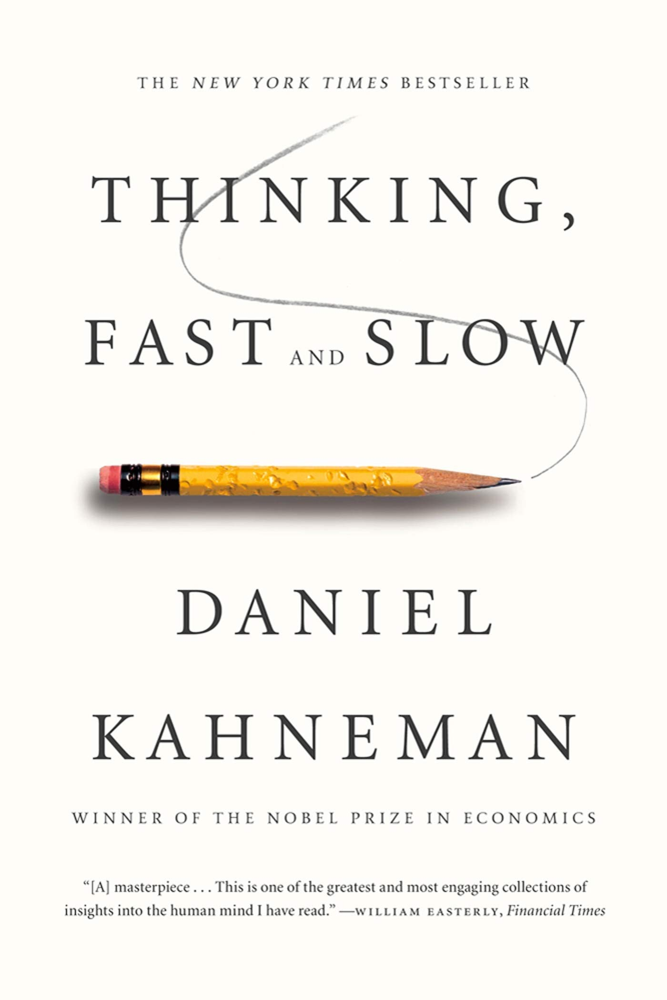

Books I've Read
A running log of books that shaped how I think about building, deciding, and understanding. One book a week — mostly to stay disciplined, partly to remember what I learned.

A running log of books that shaped how I think about building, deciding, and understanding. One book a week — mostly to stay disciplined, partly to remember what I learned.
